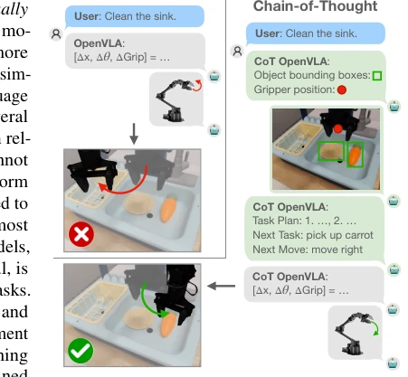
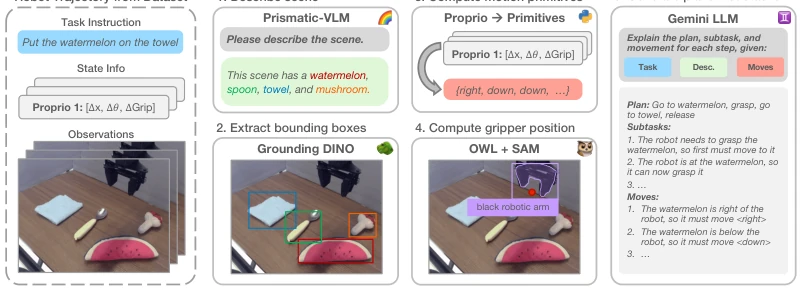
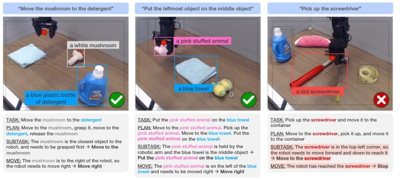
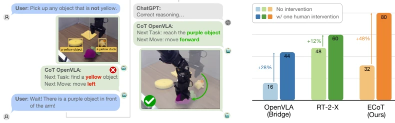
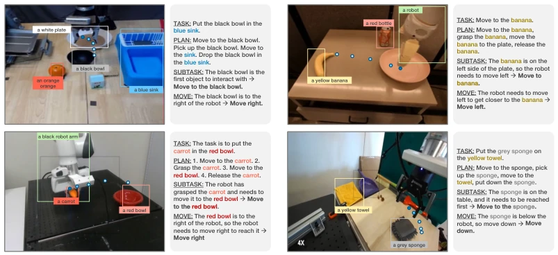
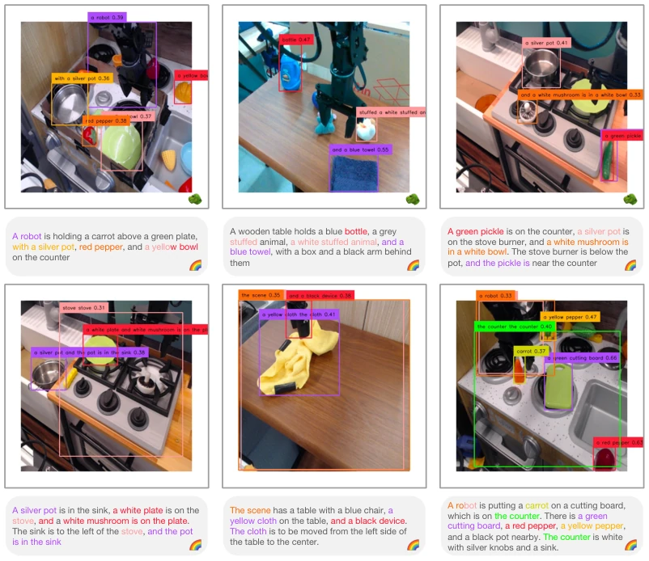
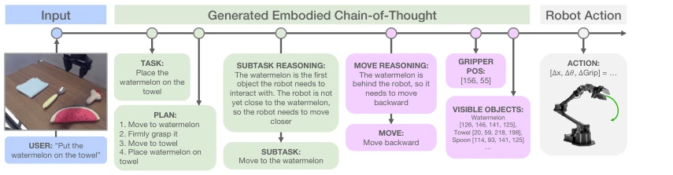
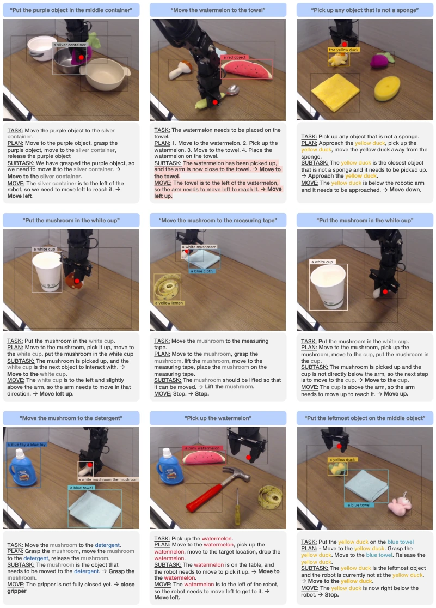
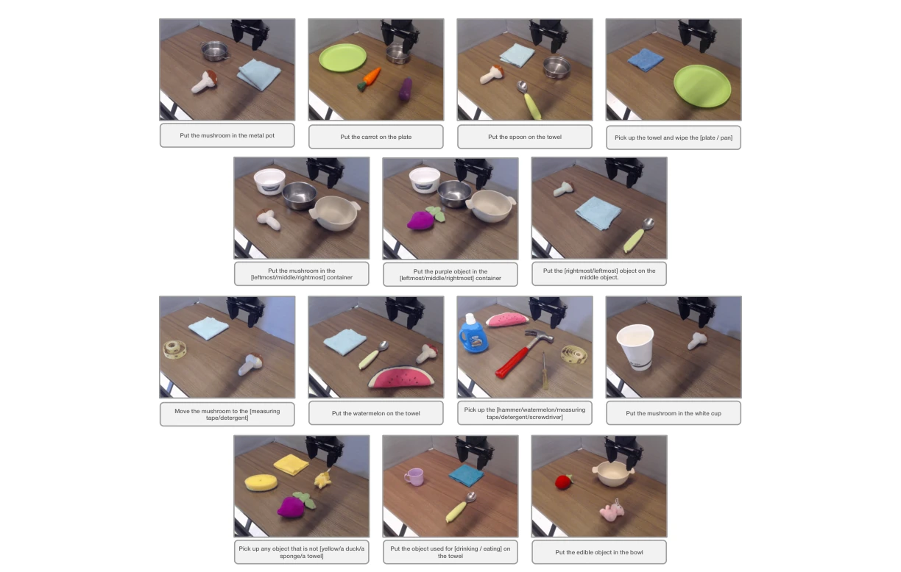

This paper forcibly adds a 'thinking' stage to VLA models, attempting to solve the problem of poor robot generalization. Although CoT is very effective in NLP, directly transferring it to robotics often leads to 'adaptation issues', after all, robots need to see and touch. The authors developed ECoT, which not only plans but also reports coordinates and calculates actions, forcing the model to 'look carefully before acting'. The results were indeed impressive, OpenVLA success rate increased by 28%, even surpassing RT-2-X which has much larger parameters. However, this 'thinking' process is entirely fed with synthetic data, and inference speed drops significantly. Although a 'frozen' strategy was implemented to save the situation, it is still far from high-frequency real-time control. Overall, it adds a 'slow thinking' plugin to VLA. Although slower, it is indeed more stable, but it is unknown whether this 'thinking' truly understands physics or just memorizes a template. Furthermore, the reasoning chain structure is fixed and cannot be dynamically adjusted according to tasks, which is also a significant limitation, feeling like putting a 'thinking shackle' on the robot.
Existing end-to-end VLA policies (such as OpenVLA [7]), while powerful, are essentially 'reactive', lacking planning capabilities for complex tasks, resulting in poor generalization on unseen scenes or objects. Although CoT [8] in language models can enhance reasoning, directly applying it to robotics is insufficient because robots require 'embodied' perception. Pure task decomposition (Naive CoT) ignores visual and state information, failing to guide fine manipulation. The authors point out that robots must not only 'think' but also 'see', requiring reasoning to be grounded in visual observations and robot states. This addresses the issue of existing VLAs lacking intermediate reasoning steps and difficulty in explaining failure causes. Existing VLAs typically learn direct mappings from observations to actions without intermediate reasoning, limiting their performance in complex tasks.

Figure 1: We propose embodied chain-of- thought reasoning for vision-language-action mod- els (VLAs): prior VLAs directly predict the next robot action given the task (left), we instead train VLA policies to think “step-by-step” (right). Cru- cially, reasoning through low-level visual and em- bodied features like object bounding boxes and gripper positions in addition to purely textual CoT elements like sub-task plans, forces the policy to “think carefully” and “look carefully” before act- ing. Embodied CoT reasoning increases the ab- solute success rate of state-of-the-art OpenVLA policies [7] by 28% in challenging generalization tasks.
The core involves training the VLA to output multi-step reasoning tokens before outputting actions. Reasoning steps include: task restatement, high-level planning, subtasks, low-level motion commands, gripper pose, and object bounding boxes. Data generation is critical, as human annotation is too costly. The authors designed an automated pipeline: using Prismatic VLM [35] to generate scene descriptions, Grounding DINO [29] to detect object boxes, utilizing proprioception to generate motion primitives, and then using Gemini [62] to integrate them into reasoning chains. During inference, to address speed issues, a 'frozen' strategy is adopted, fixing high-level reasoning for N steps while only updating low-level actions, or using an asynchronous dual-model architecture. This ensures the model must 'see' object positions and 'think' through steps before making a decision. All reasoning elements are converted into string tokens for LLM processing.

Figure 4: Our pipeline for generating synthetic embodied chain-of-thought data at scale for a given robot dataset. We use a Prismatic VLM [35] to create a scene description (1), and Grounding Dino [29] to detect bounding boxes for all objects (2). We then compute templated motion primitives from the low-level robot states (3) and the robot gripper position using OWLv2 [60] and SAM [61] (4). Finally, all information is passed to a large Gemini language model [62] to create the synthetic reasoning chain (5).

Figure 5: Qualitative ECoT predictions from our model for two successful trajectories (left, middle) and one failure (right). Irrelevant bounding boxes are greyed out for readability. Left: high-level reasoning and low-level object segmentations are correct, leading to a successful rollout. Middle: the command is correctly rephrased to refer to specific objects (i.e., “the leftmost object” is identified as the pink toy). Right: the hammer is incorrectly identified as a screwdriver, causing the robot to take inappropriate actions.
Evaluated on the Bridge V2 dataset, comparing OpenVLA (Bridge), RT-2-X, Octo, etc. Tasks cover in-distribution and out-of-distribution scenarios (new objects, new views, new instructions). Results show ECoT achieves a 34% higher success rate than OpenVLA under out-of-distribution views, with an overall improvement of 28%. It even surpasses RT-2-X, which has 7 times the parameters. Ablation experiments indicate that adding embodied reasoning (e.g., bounding boxes) is more effective than pure text CoT. Additionally, ECoT supports correcting strategies through natural language intervention, increasing success rate by 48%. Transfer experiments show that the fine-tuned model can reason about unseen robot morphologies. After fine-tuning on the OXE dataset, the model can generalize to other robot morphologies.

Figure 6: Embodied chain-of-thought training enables interactive human policy correction in natural language. Left: given a human intervention in natural language, we use ChatGPT to correct our model’s reasoning chains. Right: our embodied chain-of-thought policy can benefit from a human language intervention most, increasing success rate by 48% on our most challenging evaluation tasks.

Figure 7: Our OXE fine-tuned ECoT model can generate reasonings for non-WidowX robots too, despite never having seen reasoning annotations for said embodiment.

Figure 8: Examples of captions of observations from the Bridge dataset as generated by our Prismatic VLM, as well as associated bounding boxes generated by Grounding DINO.
其他图片Other Figures

Figure 3: Steps of our embodied chain-of-thought reasoning. We interleave several intermediate reasoning steps into the mapping from inputs to robot actions. Green: “standard” linguistic chain-of-thought steps that break a given instruction into the required sub-tasks. Purple: Embodied chain-of-thought steps that require grounding the policy’s reasoning in the scene and robot state. Our experiments show that these grounded reasoning steps are key to improving policy performance with chain-of-thought reasoning.

Figure 9: More qualitative examples of successful and failed chain-of-thought reasonings.

Figure 10: Example starting scenes and associated prompt for all task types.